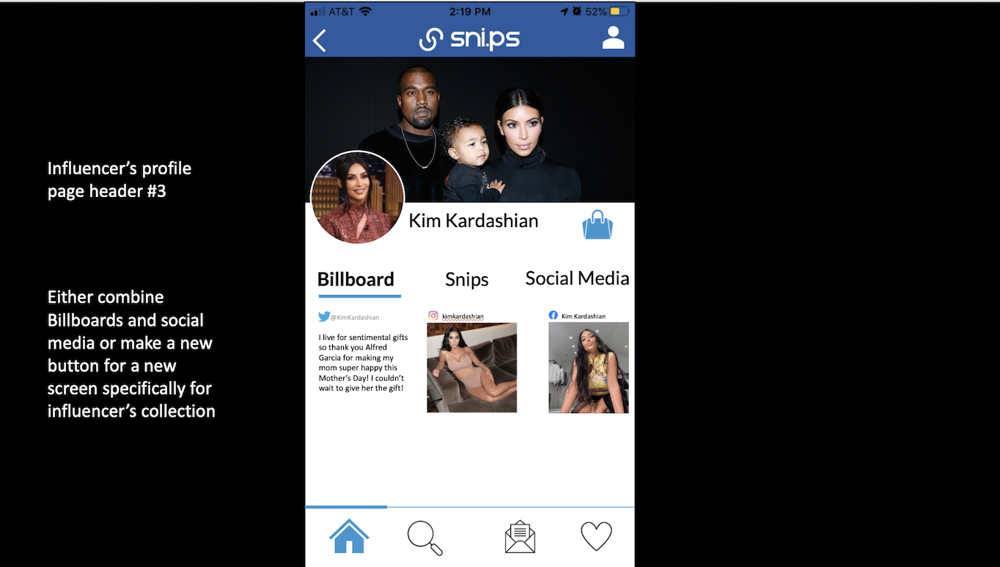
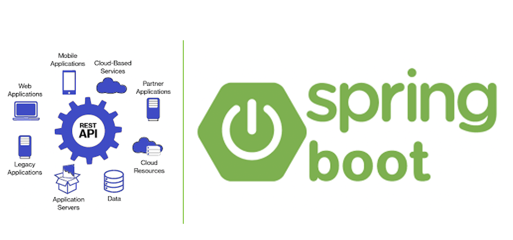
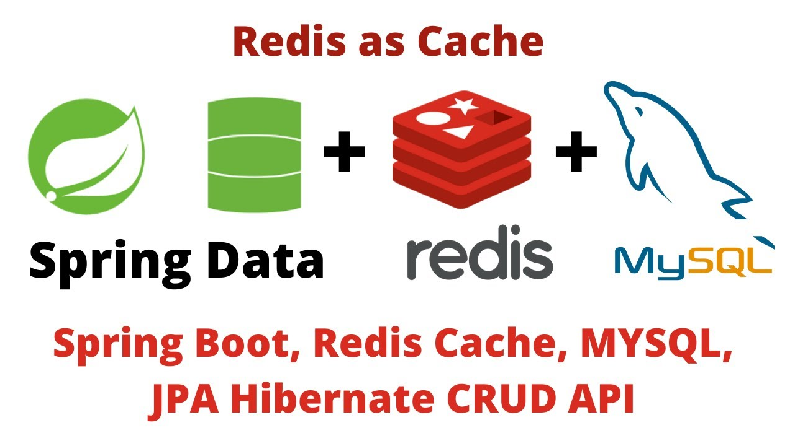

Software Development Engineer Internship @ Snips Media | Chicago, IL (Jun 2020 - Sep 2020)

Developed a tool for influencers to create shoppable photo/video collections, associating products which fans can purchase directly through the web/mobile application.
Designed and delivered a test-driven RESTful backend service using Java Spring Boot. Implemented CRUD end- points to support business logic.


Designed the database schema for this application, set up the data persistent layer using Hibernate/JDBC.
Deployed database to RDS and deployed the backend to EBS. Accepting beta user traffic 100 QPS during peak hours.